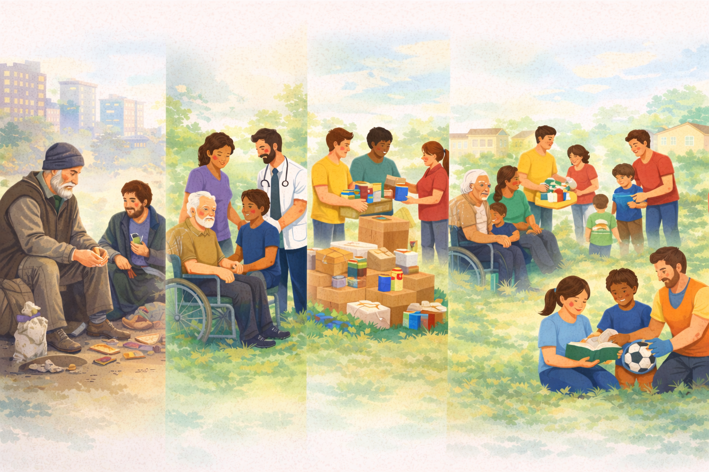

Quem Somos
Conheça a trajetória da Associação Habacuque do Brasil e o foco atual da nossa atuação em Guarulhos.

Nossa História
Primeiras Ações Voluntárias
A Associação surgiu a partir de ações voluntárias na região da Praça da Sé, em São Paulo, onde voluntários realizavam ações solidárias com pessoas em situação de rua, oferecendo alimentação, apoio para higiene pessoal, escuta e acolhimento.
Ampliação do Atendimento
As ações foram se estruturando e ampliando, passando a oferecer apoio a pessoas em situação de vulnerabilidade social e dependência química, sempre com foco no cuidado, na dignidade e na reintegração social.
Atuação em Guarulhos
A instituição direcionou suas atividades para o município de Guarulhos - SP, onde passou a desenvolver ações comunitárias voltadas ao atendimento de famílias em situação de vulnerabilidade, especialmente na região de Maria Dirce e Pimentas.
Reorganização Institucional
A Associação passou por um processo de reorganização institucional, concentrando suas ações no atendimento de crianças e adolescentes, por meio de atividades socioeducativas e da execução do Serviço de Convivência e Fortalecimento de Vínculos (SCFV).
Atuação Atual
Atualmente, a instituição atua na promoção da convivência comunitária, no fortalecimento dos vínculos familiares e na oferta de atividades que contribuem para o desenvolvimento social, cultural e educativo de crianças e adolescentes de 6 a 14 anos.
Parceiros e conveniamentos
A Associação atua em parceria com o poder público para a execução do Serviço de Convivência e Fortalecimento de Vínculos no território.
Missão
Promover o desenvolvimento social e humano de crianças, adolescentes, famílias e da comunidade por meio de ações socioeducativas, fortalecimento de vínculos familiares e comunitários e iniciativas que contribuam para a inclusão social, cidadania, dignidade e participação comunitária.
Visão
Ser uma organização reconhecida pela atuação social responsável e pelo impacto positivo na vida de crianças, adolescentes, famílias e na comunidade, contribuindo para a construção de um território mais justo, solidário e com oportunidades para todos.
Valores
- Respeito à dignidade humana
- Compromisso social
- Solidariedade e empatia
- Responsabilidade e transparência
- Fortalecimento da convivência familiar e comunitária
- Valorização da participação comunitária
- Promoção da cidadania e inclusão social